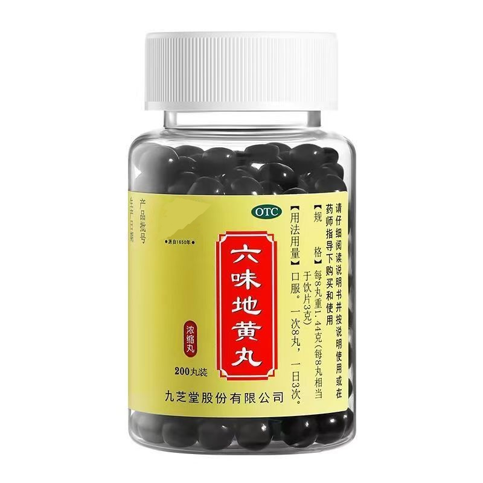
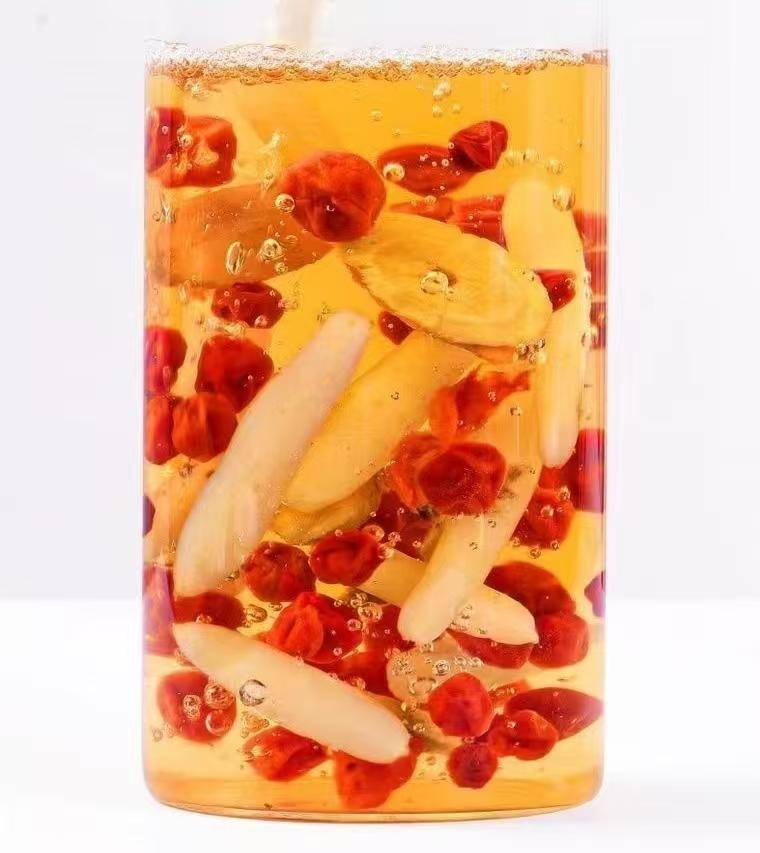
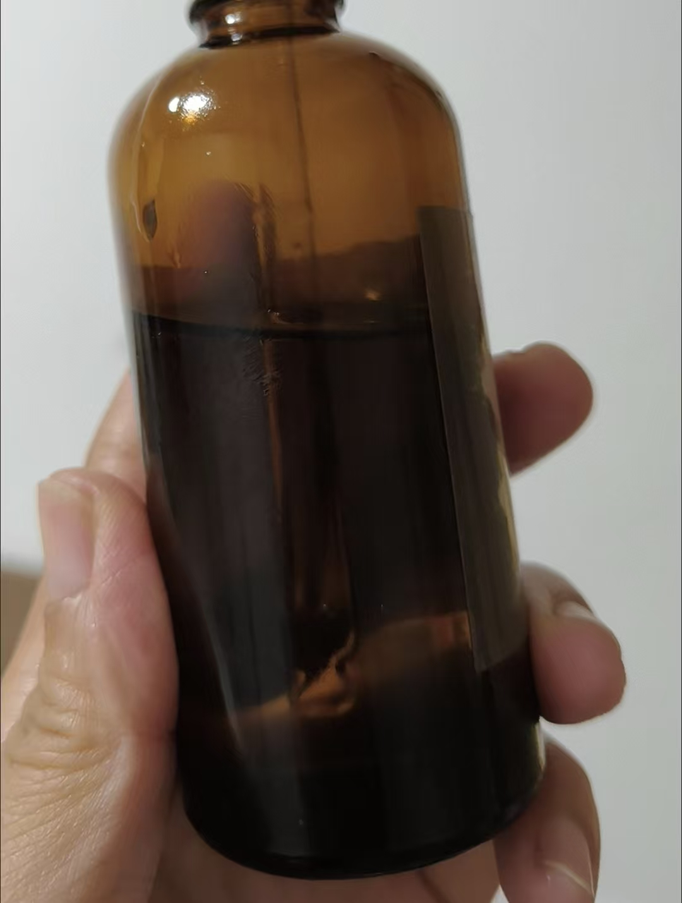

探索身体与精神的和谐之道
Традиционная китайская медицина раскрывает мудрость тысячелетий: познайте свой тип телосложения, восстановите баланс Инь и Ян, откройте доступ к осознанному благополучию.
传统中医揭示千年智慧：认识体质，恢复阴阳平衡，开启有觉知的健康生活
养气 · 调身 · 治未病
«Когда Ци течёт свободно — тело исцеляется само.» Тысячи лет китайская медицина учит: профилактика важнее лечения. Узнайте свой тип телосложения и получите персональные рекомендации по питанию, движению и образу жизни. В основе ТКМ лежит концепция «治未病» — лечить болезнь до её возникновения, укрепляя защитные силы организма и приводя к гармонии энергии Ци.
Узнать больше → 了解更多Ответьте на вопросы — получите анализ телосложения и персональные рекомендации
Продукты для здоровья: фитотерапия, питание, средства для восстановления баланса
Фундаментальные концепции ТКМ: Инь-Ян, У-Син, меридианы и типы телосложения
AI 体质检测
Ответьте на несколько вопросов — наш помощник определит ваш тип телосложения по канонам ТКМ и предложит персональные рекомендации
Инь-недостаточный тип (阴虚体质) — характеризуется дефицитом увлажняющих и охлаждающих ресурсов организма. Проявления: сухость во рту, жар в ладонях, ночная потливость, склонность к тревожности.
Недостаток Инь почек и сердца (心肾阴虚). Сердцебиение, холодный пот на ладонях — признаки дисбаланса сердечной Инь. Поясничная слабость и ночная потливость указывают на недостаток Инь почек.
Тай-си (KI3) 太溪 — точка почек, укрепляет Инь. Шэнь-мэнь (HT7) 神门 — успокаивает сердце. Сань-инь-цзяо (SP6) 三阴交 — гармонизирует Инь. Массируйте по 2–3 минуты ежедневно.
Упор на увлажняющие продукты: груши, ягоды годжи, кунжут, тофу, тыква, корень лотоса. Исключить острое и жареное. Пить тёплую воду с мёдом.
Ложиться до 23:00. Практиковать тайцзи или цигун. Избегать переутомления и эмоциональных перегрузок. Медитация 15 минут в день.



Продукты для восстановления баланса организма по канонам традиционной китайской медицины
Погрузитесь в фундаментальные концепции традиционной китайской медицины — от философии до практических методик